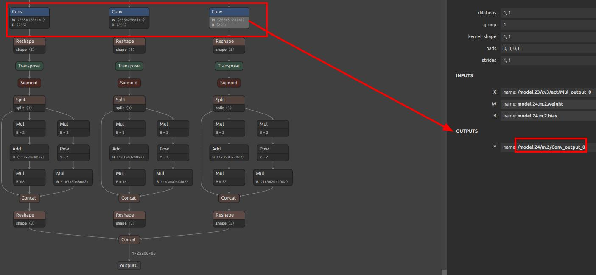

English
EnglishConvert ONNX Model to a Model Usable by MaixCAM2 MaixPy (MUD)
For MaixCAM / MaixCAM-Pro model conversion, please refer to the MaixCAM Model Conversion Documentation
Introduction
Models trained on a computer cannot be directly used on MaixCAM2 due to its limited hardware capabilities. Typically, the model needs to be quantized to INT8 to reduce computation, and converted to a format supported by MaixCAM2.
This article describes how to convert an ONNX model into a model usable by MaixCAM2 (MUD model).
Supported Model File Format for MaixCAM2
MUD (Model Universal Description) is a model description file supported by MaixPy that unifies models across different platforms, making MaixPy code cross-platform. It is a text file in ini format and can be edited with a text editor.
A MUD file is usually accompanied by one or more actual model files. For MaixCAM2, the actual model file is in .axmodel format, and the MUD file provides meta information about it.
For example, for a YOLOv8 model, the files are yolov8n.mud, yolo11n_640x480_vnpu.axmodel, and yolo11n_640x480_npu.axmodel. The .mud file contains:
[basic]
type = axmodel
model_npu = yolo11n_640x480_npu.axmodel
model_vnpu = yolo11n_640x480_vnpu.axmodel
[extra]
model_type = yolo11
type=detector
input_type = rgb
labels = person, bicycle, car, motorcycle, airplane, bus, train, truck, boat, traffic light, fire hydrant, stop sign, parking meter, bench, bird, cat, dog, horse, sheep, cow, elephant, bear, zebra, giraffe, backpack, umbrella, handbag, tie, suitcase, frisbee, skis, snowboard, sports ball, kite, baseball bat, baseball glove, skateboard, surfboard, tennis racket, bottle, wine glass, cup, fork, knife, spoon, bowl, banana, apple, sandwich, orange, broccoli, carrot, hot dog, pizza, donut, cake, chair, couch, potted plant, bed, dining table, toilet, tv, laptop, mouse, remote, keyboard, cell phone, microwave, oven, toaster, sink, refrigerator, book, clock, vase, scissors, teddy bear, hair drier, toothbrush
input_cache = true
output_cache = true
input_cache_flush = false
output_cache_inval = true
mean = 0,0,0
scale = 0.00392156862745098, 0.00392156862745098, 0.00392156862745098
As you can see, the model type is axmodel, and the paths to the model files are relative to the .mud file.
Also included are important attributes:
labels: 80 categories of detection targets.input_cache/output_cache: Whether input/output uses cached memory. Enables faster reading when data is accessed repeatedly (e.g., in post-processing).input_cache_flush: Whether to flush cache to DDR before model execution. If the first layer is an NPU operator, this should betrue. For YOLO11, preprocessing is embedded (CPU first layer), so set tofalse. If unsure, usetrue.output_cache_inval: Whether to invalidate output buffer after model execution to ensure DDR is accessed. If the last layer is NPU, set totrue. For CPU,falseis okay. If unsure, usetrue.mean/scale: Although preprocessing is embedded during conversion, these are shown for reference and must match preprocessing used during training.
Just place all three files in the same directory for use.
Prepare the ONNX Model
Prepare your ONNX model, and use https://netron.app/ to view it. Ensure its operators are supported by the conversion tool, as listed in the Pulsar2 Toolchain Documentation.
For MaixCAM2, refer to the AX620E platform section.
Find Appropriate Quantization Output Nodes
Most models have post-processing nodes handled by the CPU. These can affect quantization accuracy and cause failure, so we separate them.
Example: YOLOv5

Here we see three conv layers. Post-conv computations are handled by the CPU. Thus, we set these three conv outputs as model outputs:
/model.24/m.0/Conv_output_0,/model.24/m.1/Conv_output_0,/model.24/m.2/Conv_output_0.
For YOLO11/YOLOv8, see Offline Training YOLO11/YOLOv8.
For classification models, the final output is usually enough. If there’s a softmax, it’s recommended to exclude it and take the output before softmax:

Install the Model Conversion Environment
Follow the Pulsar2 Toolchain Documentation to install it. Use Docker to avoid host environment conflicts. If you're new to Docker, think of it as a lightweight virtual machine.
Install Docker
Follow Docker's official documentation.
Example:
# Install Docker dependencies
sudo apt-get update
sudo apt-get install apt-transport-https ca-certificates curl gnupg-agent software-properties-common
# Add Docker repo
curl -fsSL https://download.docker.com/linux/ubuntu/gpg | sudo apt-key add -
sudo add-apt-repository "deb [arch=amd64] https://download.docker.com/linux/ubuntu $(lsb_release -cs) stable"
# Install Docker
sudo apt-get update
sudo apt-get install docker-ce docker-ce-cli containerd.io
Pull the Docker Image
Follow the instructions in the Pulsar2 Documentation or download the latest version from Hugging Face.
After downloading, load it with:
docker load -i pulsar2_vxx.tar.gz
Run the Container
docker run -it --privileged --name pulsar2 -v /home/$USER/data:/home/$USER/data pulsar2
This runs a container named pulsar2 and mounts ~/data into the container.
To start next time:
docker start pulsar2 && docker attach pulsar2
Run pulsar2 inside the container to view the help message.
Convert the Model
Refer to Pulsar2 documentation. The main command:
pulsar2 build --target_hardware AX620E --input onnx_path --output_dir out_dir --config config_path
Key components are the onnx model and the config JSON file. Extract output nodes using this script extract_onnx.py:
# same as original code
Use onnxsim to simplify the model.
Example config.json for YOLO11:
# same as original
Note:
calibration_dataset: Calibration data, sample some images from your dataset.npu_mode: Set toNPU2to use full NPU. Set toNPU1if using AI-ISP (divides NPU for two purposes).
Convert both modes for flexibility (model_npu and model_vnpu in MUD file).
Write Conversion Scripts
Helpful scripts:
extract_onnx.py: Extract ONNX submodel (see above).gen_cali_images_tar.py: Package image dataset intotarfile for calibration.
# same as original code
convert.sh: One-click conversion for both NPU and VNPU models.
# same as original script
After successful execution, you'll get *_npu.axmodel and *_vnpu.axmodel.
Write the mud File
Edit as per your model. For YOLO11:
# same as previous MUD example
The [basic] section is required. Once set, you can load and run the model using maix.nn.NN in MaixPy or MaixCDK.
If MaixPy doesn't support your model, define your own extra fields and write decoding logic. You can either:
- Use Python in
MaixPyto load the model viamaix.nn.NN, runforward/forward_image, and process the outputs in Python (easier but slower); - Or, for better performance and reusable integration, write C++ logic in
MaixCDK, see YOLOv5 example.
Once done, consider submitting a PR to MaixPy or share your model on MaixHub to earn rewards ranging from ¥30 to ¥2000!